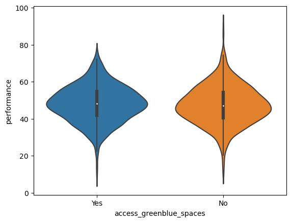
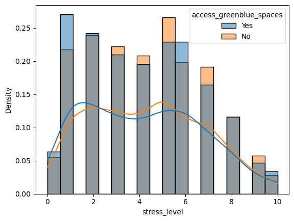
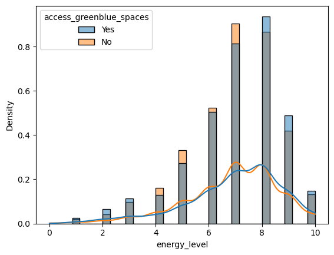
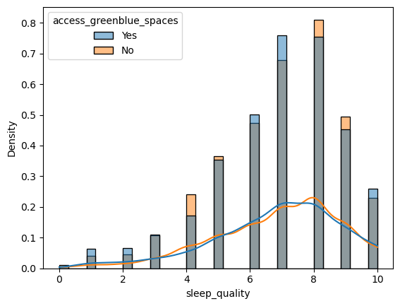
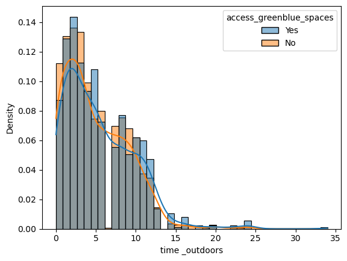

Explore the relationship between green space access and different health conditions#
import numpy as np
import pandas as pd
import matplotlib.pyplot as plt
import seaborn as sns
from sklearn.preprocessing import OneHotEncoder
# load data
health = pd.read_csv('data/CitieSHealth_BCN_DATA_PanelStudy_20220414.csv')
health.head()
| ID_Zenodo | date_all | year | month | day | dayoftheweek | hour | mentalhealth_survey | occurrence_mental | bienestar | ... | education | covid_work | covid_mood | covid_sleep | covid_espacios | covid_aire | covid_motor | covid_electric | covid_bikewalk | covid_public_trans | |
|---|---|---|---|---|---|---|---|---|---|---|---|---|---|---|---|---|---|---|---|---|---|
| 0 | 71 | 22190 | 2020 | 10 | 2 | 4 | 18 | Yes | 1.0 | 9.0 | ... | Universitario | Ha empeorado mucho | Ha empeorado mucho | Ha empeorado un poco | Le doy más importancia que antes | Le doy más importancia que antes | Lo utilizo igual que antes | Lo utilizo igual que antes | Lo utilizo más que antes | Lo utilizo igual que antes |
| 1 | 112 | 22202 | 2020 | 10 | 14 | 2 | 22 | Yes | 2.0 | 8.0 | ... | Universitario | Ha empeorado mucho | Ha empeorado un poco | No ha cambiado | Le doy más importancia que antes | Le doy más importancia que antes | Lo utilizo igual que antes | NaN | Lo utilizo más que antes | Lo utilizo menos que antes |
| 2 | 110 | 22217 | 2020 | 10 | 29 | 3 | 18 | Yes | 10.0 | 9.0 | ... | Universitario | Ha empeorado mucho | No ha cambiado | No ha cambiado | Le doy más importancia que antes | Le doy más importancia que antes | Lo utilizo igual que antes | Lo utilizo más que antes | Lo utilizo más que antes | Lo utilizo menos que antes |
| 3 | 115 | 22222 | 2020 | 11 | 3 | 1 | 18 | Yes | 14.0 | 3.0 | ... | Universitario | Ha empeorado mucho | Ha empeorado un poco | Ha empeorado un poco | Le doy más importancia que antes | Le doy más importancia que antes | Lo utilizo igual que antes | Lo utilizo igual que antes | Lo utilizo igual que antes | Lo utilizo menos que antes |
| 4 | 135 | 22231 | 2020 | 11 | 12 | 3 | 22 | Yes | 12.0 | 9.0 | ... | Universitario | Ha empeorado mucho | Ha empeorado un poco | Ha empeorado un poco | Le doy más importancia que antes | No ha cambiado | NaN | NaN | Lo utilizo menos que antes | Lo utilizo más que antes |
5 rows × 95 columns
# The list of variables that we are intersted in
variables = ['access_greenbluespaces_300mbuff',
'performance', 'estres', 'energia', 'sueno',
'horasfuera'] #'dieta', 'alcohol', 'drogas', 'enfermo', 'smoke', 'psycho',]
renamed_variables = {'access_greenbluespaces_300mbuff': 'access_greenblue_spaces',
'estres': 'stress_level', 'energia': 'energy_level',
'sueno':'sleep_quality', 'horasfuera': 'time _outdoors',
'dieta': 'diet', 'drogas':'drug_use', 'enfermo': 'illness'
}
health_clean = health.loc[:, variables].rename(columns = renamed_variables).dropna()
health_clean.head()
| access_greenblue_spaces | performance | stress_level | energy_level | sleep_quality | time _outdoors | |
|---|---|---|---|---|---|---|
| 1 | Yes | 51.240993 | 5.0 | 9.0 | 8.0 | 5.0 |
| 2 | Yes | 56.006067 | 8.0 | 5.0 | 9.0 | 8.0 |
| 3 | Yes | 58.177117 | 5.0 | 2.0 | 2.0 | 5.0 |
| 4 | Yes | 71.481757 | 6.0 | 9.0 | 2.0 | 22.0 |
| 6 | No | 46.047583 | 5.0 | 5.0 | 10.0 | 3.0 |
def ohe(data, column):
enc = OneHotEncoder()
enc.fit(data[column])
encoded_data = pd.DataFrame(enc.transform(data[column]).toarray().astype(int))
encoded_data.columns = enc.get_feature_names_out()
encoded_data = encoded_data.set_index(data.index)
return encoded_data
one_hot_health_clean = one_hot_encode(health_clean, ["access_greenblue_spaces"])
one_hot_health_clean.head()
| performance | stress_level | energy_level | sleep_quality | time _outdoors | access_greenblue_spaces_No | access_greenblue_spaces_Yes | |
|---|---|---|---|---|---|---|---|
| 1 | 51.240993 | 5.0 | 9.0 | 8.0 | 5.0 | 0.0 | 1.0 |
| 2 | 56.006067 | 8.0 | 5.0 | 9.0 | 8.0 | 0.0 | 1.0 |
| 3 | 58.177117 | 5.0 | 2.0 | 2.0 | 5.0 | 0.0 | 1.0 |
| 4 | 71.481757 | 6.0 | 9.0 | 2.0 | 22.0 | 0.0 | 1.0 |
| 6 | 46.047583 | 5.0 | 5.0 | 10.0 | 3.0 | 1.0 | 0.0 |
sns.pairplot(one_hot_health_clean, hue = "access_greenblue_spaces_Yes")
<seaborn.axisgrid.PairGrid at 0x7f2b3729b160>
sns.violinplot(data = health_clean, y = 'performance', x = 'access_greenblue_spaces');

sns.histplot(data = health_clean,
x = 'stress_level',
hue = 'access_greenblue_spaces',
kde = True,
stat = "density",
common_norm = False);

sns.histplot(data = health_clean,
x = 'energy_level',
hue = 'access_greenblue_spaces',
kde = True,
stat = "density",
common_norm = False);

sns.histplot(data = health_clean,
x = 'sleep_quality',
hue = 'access_greenblue_spaces',
kde = True,
stat = "density",
common_norm = False);

sns.histplot(data = health_clean,
x = 'time _outdoors',
hue = 'access_greenblue_spaces',
kde = True,
stat = "density",
common_norm = False);
